Clasificación de Sistemas de ecuaciones lineales
Se vio que si al representar gráficamente las dos ecuaciones lineales de un sistema, las rectas resultantes se cortan en un punto, entonces el sistema tiene única solución.
Sin embargo, hay sistemas que tienen infinitas soluciones y otros que no tienen solución.
Los ejemplos que siguen muestran estas dos últimas situaciones:
Caso 1
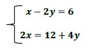
Se despeja y de la primera ecuación:
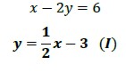
Se despeja y de la segunda ecuación:
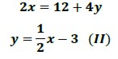
Se observa que las expresiones (I) y (II) son iguales. Esto significa que las ecuaciones del sistema corresponden a la misma recta. Cada punto (x; y) de esa recta es solución del sistema.
El sistema tiene infinitas soluciones.
El conjunto solución es:
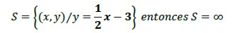
Gráficamente, como vemos en la figura, la solución queda determinada por la recta de ecuación:
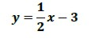
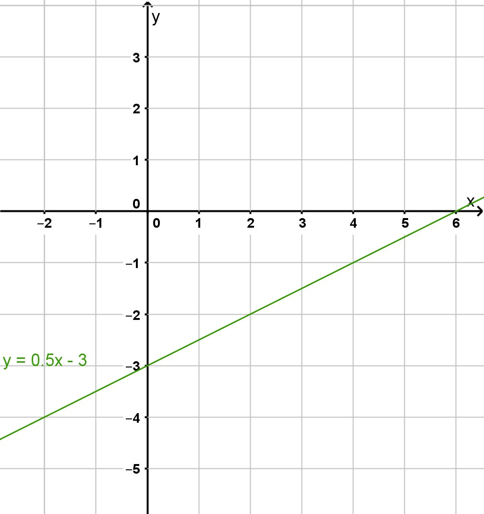
Caso 2
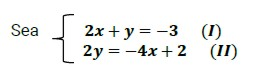
Se despeja y de la primera ecuación:
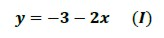
Se despeja y de la segunda ecuación:
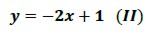
Las expresiones (I) y (II) corresponden a las ecuaciones de dos rectas que tienen igual pendiente, pero distinta ordenada al origen. Esas rectas son paralelas y no tienen ningún punto en común.
El sistema no tiene solución.
El conjunto solución es vacío:
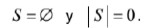
Esto lo comprobamos al realizar la gráfica donde se evidencian dos rectas paralelas:
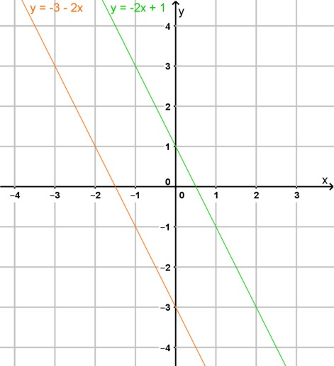
En el siguiente organizador gráfico se presenta una clasificación de los sistemas de ecuaciones lineales:
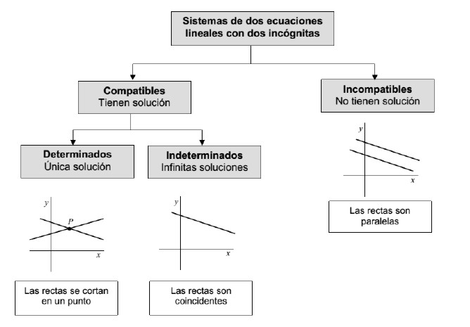
Obra publicada con Licencia Creative Commons Reconocimiento Compartir igual 4.0